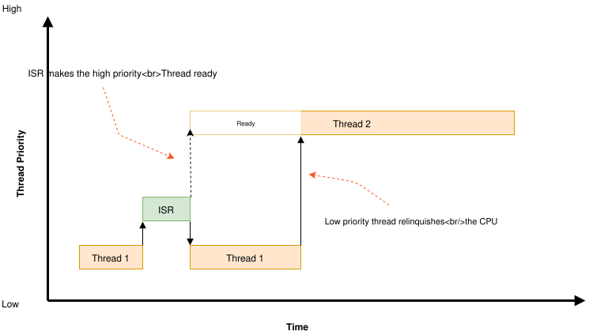
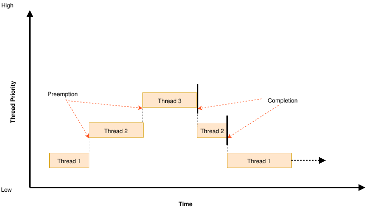
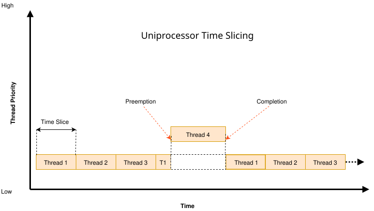

Scheduling
The kernel’s priority-based scheduler allows an application’s threads to share the CPU.
Concepts
The scheduler determines which thread is allowed to execute at any point in time; this thread is known as the current thread.
There are various points in time when the scheduler is given an opportunity to change the identity of the current thread, meaning when the scheduler switches the CPU’s execution from one thread to another. These points are called reschedule points. Some potential reschedule points are:
transition of a thread from running state to a suspended or waiting state, for example by
k_sem_take()ork_sleep().transition of a thread to the ready state, for example by
k_sem_give()ork_thread_start()return to thread context after processing an interrupt
when a running thread invokes
k_yield()
A thread sleeps when it voluntarily initiates an operation that transitions itself to a suspended or waiting state.
Whenever the scheduler changes the identity of the current thread, or when execution of the current thread is replaced by an ISR, the kernel first saves the current thread’s CPU register values. These register values get restored when the thread later resumes execution.
Scheduling Algorithm
The kernel’s scheduler selects the highest priority ready thread to be the current thread. When multiple ready threads of the same priority exist, the scheduler chooses the one that has been waiting longest.
A thread’s relative priority is primarily determined by its static priority.
However, when both earliest-deadline-first scheduling is enabled
(CONFIG_SCHED_DEADLINE) and a choice of threads have equal
static priority, then the thread with the earlier deadline is considered
to have the higher priority. Thus, when earliest-deadline-first scheduling is
enabled, two threads are only considered to have the same priority when both
their static priorities and deadlines are equal. The routine
k_thread_deadline_set() is used to set a thread’s deadline.
Note
Execution of ISRs takes precedence over thread execution, so the execution of the current thread may be replaced by an ISR at any time unless interrupts have been masked. This applies to both cooperative threads and preemptive threads.
The kernel can be built with one of several choices for the ready queue implementation, offering different choices between code size, constant factor runtime overhead and performance scaling when many threads are added.
Simple linked-list ready queue (
CONFIG_SCHED_SIMPLE)The scheduler ready queue will be implemented as a simple unordered list, with very fast constant time performance for single threads and very low code size. This implementation should be selected on systems with constrained code size that will never see more than a small number (3, maybe) of runnable threads in the queue at any given time. On most platforms (that are not otherwise using the red/black tree) this results in a savings of ~2k of code size.
Red/black tree ready queue (
CONFIG_SCHED_SCALABLE)The scheduler ready queue will be implemented as a red/black tree. This has rather slower constant-time insertion and removal overhead, and on most platforms (that are not otherwise using the red/black tree somewhere) requires an extra ~2kb of code. The resulting behavior will scale cleanly and quickly into the many thousands of threads.
Use this for applications needing many concurrent runnable threads (> 20 or so). Most applications won’t need this ready queue implementation.
Traditional multi-queue ready queue (
CONFIG_SCHED_MULTIQ)When selected, the scheduler ready queue will be implemented as the classic/textbook array of lists, one per priority.
This corresponds to the scheduler algorithm used in Zephyr versions prior to 1.12.
It incurs only a tiny code size overhead vs. the “dumb” scheduler and runs in O(1) time in almost all circumstances with very low constant factor. But it requires a fairly large RAM budget to store those list heads, and the limited features make it incompatible with features like deadline scheduling that need to sort threads more finely, and SMP affinity which need to traverse the list of threads.
Typical applications with small numbers of runnable threads probably want the simple scheduler.
The wait_q abstraction used in IPC primitives to pend threads for later wakeup shares the same backend data structure choices as the scheduler, and can use the same options.
Scalable wait_q implementation (
CONFIG_WAITQ_SCALABLE)When selected, the wait_q will be implemented with a balanced tree. Choose this if you expect to have many threads waiting on individual primitives. There is a ~2kb code size increase over
CONFIG_WAITQ_SIMPLE(which may be shared withCONFIG_SCHED_SCALABLE) if the red/black tree is not used elsewhere in the application, and pend/unpend operations on “small” queues will be somewhat slower (though this is not generally a performance path).Simple linked-list wait_q (
CONFIG_WAITQ_SIMPLE)When selected, the wait_q will be implemented with a doubly-linked list. Choose this if you expect to have only a few threads blocked on any single IPC primitive.
Cooperative Time Slicing
Once a cooperative thread becomes the current thread, it remains the current thread until it performs an action that makes it unready. Consequently, if a cooperative thread performs lengthy computations, it may cause an unacceptable delay in the scheduling of other threads, including those of higher priority and equal priority.

To overcome such problems, a cooperative thread can voluntarily relinquish the CPU from time to time to permit other threads to execute. A thread can relinquish the CPU in two ways:
Calling
k_yield()puts the thread at the back of the scheduler’s prioritized list of ready threads, and then invokes the scheduler. All ready threads whose priority is higher or equal to that of the yielding thread are then allowed to execute before the yielding thread is rescheduled. If no such ready threads exist, the scheduler immediately reschedules the yielding thread without context switching.Calling
k_sleep()makes the thread unready for a specified time period. Ready threads of all priorities are then allowed to execute; however, there is no guarantee that threads whose priority is lower than that of the sleeping thread will actually be scheduled before the sleeping thread becomes ready once again.
Preemptive Time Slicing
Once a preemptive thread becomes the current thread, it remains the current thread until a higher priority thread becomes ready, or until the thread performs an action that makes it unready. Consequently, if a preemptive thread performs lengthy computations, it may cause an unacceptable delay in the scheduling of other threads, including those of equal priority.

To overcome such problems, a preemptive thread can perform cooperative time slicing (as described above), or the scheduler’s time slicing capability can be used to allow other threads of the same priority to execute.

Note
For SMP, the behavior would be similar to the above UP image, except that Thread 1 would not immediately follow Thread 4. Instead it would be Thread 2, Thread 3, Thread 1, ….
The scheduler divides time on each CPU into a series of time slices, where slices are measured in system clock ticks. The time slice size is configurable, but this size can be changed while the application is running. Scheduling a new thread causes the time slice timer to be reset.
At the end of every time slice, the scheduler checks to see if the current
thread is preemptible and, if so, implicitly invokes k_yield()
on behalf of the thread. This gives other ready threads of the same priority
the opportunity to execute before the current thread is scheduled again. If no
other threads of equal priority are ready, then the current thread remains
the current thread.
Threads with a priority higher than specified limit are exempt from preemptive time slicing, and are never preempted by a thread of equal priority. This allows an application to use preemptive time slicing only when dealing with lower priority threads that are less time-sensitive.
Note
The kernel’s time slicing algorithm does not ensure that a set of equal-priority threads receive an equitable amount of CPU time, since it does not measure the amount of time a thread actually gets to execute. However, the algorithm does ensure that a thread never executes for longer than a single time slice without being required to yield.
Scheduler Locking
A preemptible thread that does not wish to be preempted while performing
a critical operation can instruct the scheduler to temporarily treat it
as a cooperative thread by calling k_sched_lock(). This prevents
other threads from interfering while the critical operation is being performed.
Once the critical operation is complete the preemptible thread must call
k_sched_unlock() to restore its normal, preemptible status.
If a thread calls k_sched_lock() and subsequently performs an
action that makes it unready, the scheduler will switch the locking thread out
and allow other threads to execute. When the locking thread again
becomes the current thread, its non-preemptible status is maintained.
Note
Locking out the scheduler is a more efficient way for a preemptible thread to prevent preemption than changing its priority level to a negative value.
Thread Sleeping
A thread can call k_sleep() to delay its processing
for a specified time period. During the time the thread is sleeping
the CPU is relinquished to allow other ready threads to execute.
Once the specified delay has elapsed the thread becomes ready
and is eligible to be scheduled once again.
A sleeping thread can be woken up prematurely by another thread using
k_wakeup(). This technique can sometimes be used
to permit the secondary thread to signal the sleeping thread
that something has occurred without requiring the threads
to define a kernel synchronization object, such as a semaphore.
Waking up a thread that is not sleeping is allowed, but has no effect.
Busy Waiting
A thread can call k_busy_wait() to perform a busy wait
that delays its processing for a specified time period
without relinquishing the CPU to another ready thread.
A busy wait is typically used instead of thread sleeping when the required delay is too short to warrant having the scheduler context switch from the current thread to another thread and then back again.
Suggested Uses
Use cooperative threads for device drivers and other performance-critical work.
Use cooperative threads to implement mutually exclusion without the need for a kernel object, such as a mutex.
Use preemptive threads to give priority to time-sensitive processing over less time-sensitive processing.
Configuration Options
CPU Idling
Although normally reserved for the idle thread, in certain special applications, a thread might want to make the CPU idle.
Concepts
Making the CPU idle causes the kernel to pause all operations until an event, normally an interrupt, wakes up the CPU. In a regular system, the idle thread is responsible for this. However, in some constrained systems, it is possible that another thread takes this duty.
Implementation
Making the CPU idle
Making the CPU idle is simple: call the k_cpu_idle() API. The CPU will stop executing instructions until an event occurs. Most likely, the function will be called within a loop. Note that in certain architectures, upon return, k_cpu_idle() unconditionally unmasks interrupts.
static k_sem my_sem;
void my_isr(void *unused)
{
k_sem_give(&my_sem);
}
int main(void)
{
k_sem_init(&my_sem, 0, 1);
/* wait for semaphore from ISR, then do related work */
for (;;) {
/* wait for ISR to trigger work to perform */
if (k_sem_take(&my_sem, K_NO_WAIT) == 0) {
/* ... do processing */
}
/* put CPU to sleep to save power */
k_cpu_idle();
}
}
Making the CPU idle in an atomic fashion
It is possible that there is a need to do some work atomically before making the CPU idle. In such a case, k_cpu_atomic_idle() should be used instead.
In fact, there is a race condition in the previous example: the interrupt could occur between the time the semaphore is taken, finding out it is not available and making the CPU idle again. In some systems, this can cause the CPU to idle until another interrupt occurs, which might be never, thus hanging the system completely. To prevent this, k_cpu_atomic_idle() should have been used, like in this example.
static k_sem my_sem;
void my_isr(void *unused)
{
k_sem_give(&my_sem);
}
int main(void)
{
k_sem_init(&my_sem, 0, 1);
for (;;) {
unsigned int key = irq_lock();
/*
* Wait for semaphore from ISR; if acquired, do related work, then
* go to next loop iteration (the semaphore might have been given
* again); else, make the CPU idle.
*/
if (k_sem_take(&my_sem, K_NO_WAIT) == 0) {
irq_unlock(key);
/* ... do processing */
} else {
/* put CPU to sleep to save power */
k_cpu_atomic_idle(key);
}
}
}
Suggested Uses
Use k_cpu_atomic_idle() when a thread has to do some real work in addition to idling the CPU to wait for an event. See example above.
Use k_cpu_idle() only when a thread is only responsible for idling the CPU, i.e. not doing any real work, like in this example below.
int main(void)
{
/* ... do some system/application initialization */
/* thread is only used for CPU idling from this point on */
for (;;) {
k_cpu_idle();
}
}
Note
Do not use these APIs unless absolutely necessary. In a normal system, the idle thread takes care of power management, including CPU idling.